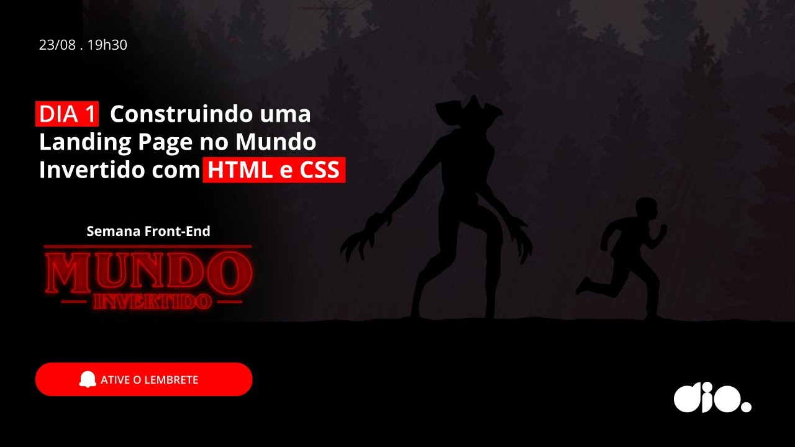

Semana Front-end | Dia 01: Construindo uma Landing Page no Mundo Invertido com HTML e CSS
28.418 visualizações • Transmitido ao vivo em 23 ago. de 2022
Inicie uma aventura imersiva no mundo do Front-end com HTML e CSS. Para isso, criaremos uma landing page
com a temática da série Stranger Things, a qual contará com a implementação de um theme switcher (light
e dark) para explorarmos os mistérios do mundo invertido.